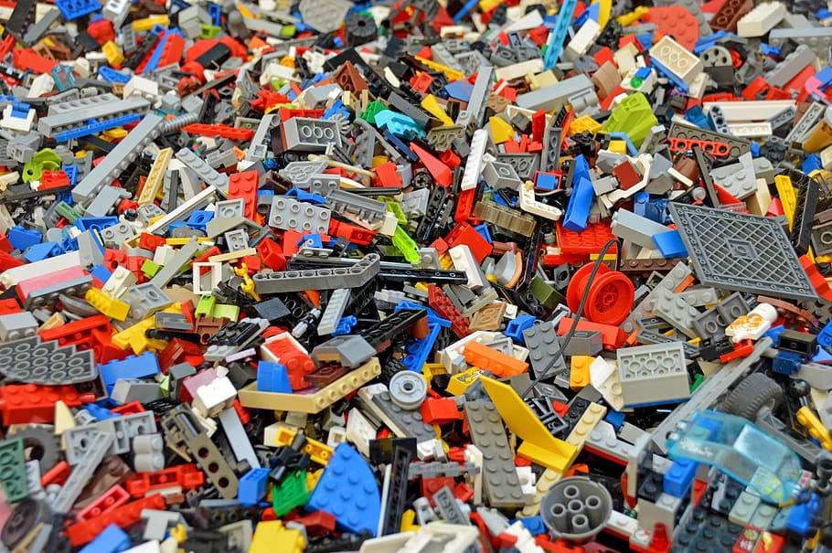

In this project, I explored Polish horse-racing data with Python. The data was scraped from
this site. The first task was to clean the
data: remove unwanted characters, change data
types and formatting, split one column into two, handle missing values. Next, I answered several
questions concerning the distribution of the data, trends, and performance. Each answer is
accompanied
by an appropriate visualisation. The libraries used: NumPy, pandas, Matplotlib.Pyplot, Seaborn.

In this projects, I answered some questions regarding the LEGO dataset, downloaded from Rebrickable. I first created a PostgreSQL
database with appropriate constraints
and filled the tables with data. Then, I wrote queries to find answers for 10 questions; some of
the questions came from the LEGO competition
held
by DataCamp; other were designed by myself. The queries used joins, subqueries, and common table
expressions.
Here, I built a fully dynamic dashboard regarding superstore sales using Excel. The data was
downloaded from Kaggle.
First, I cleaned the data by handling missing values; then, I created the dashboard using pivot
tables, pivot charts, and slicers.

In this project, I built a fully dynamic dashboard in Tableau. I downloaded the data from Kaggle.
The completion of the project required joining two tables, creating a calculated field, and applying a filter to several worksheets.